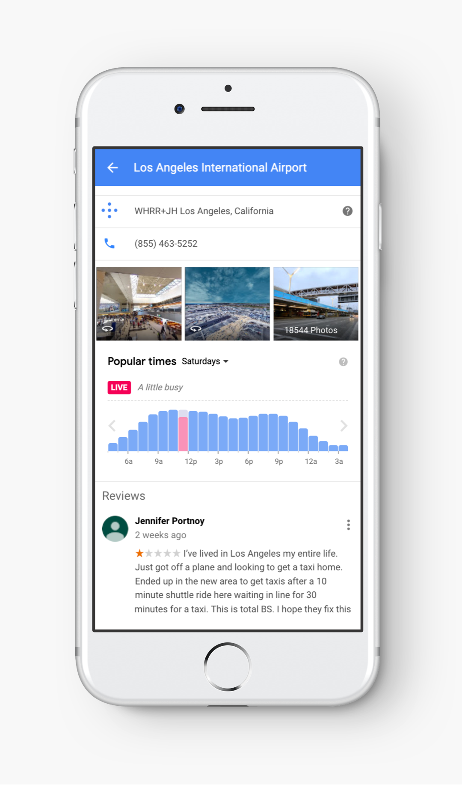
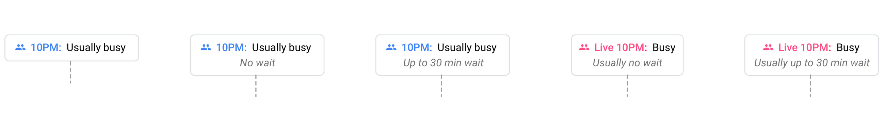
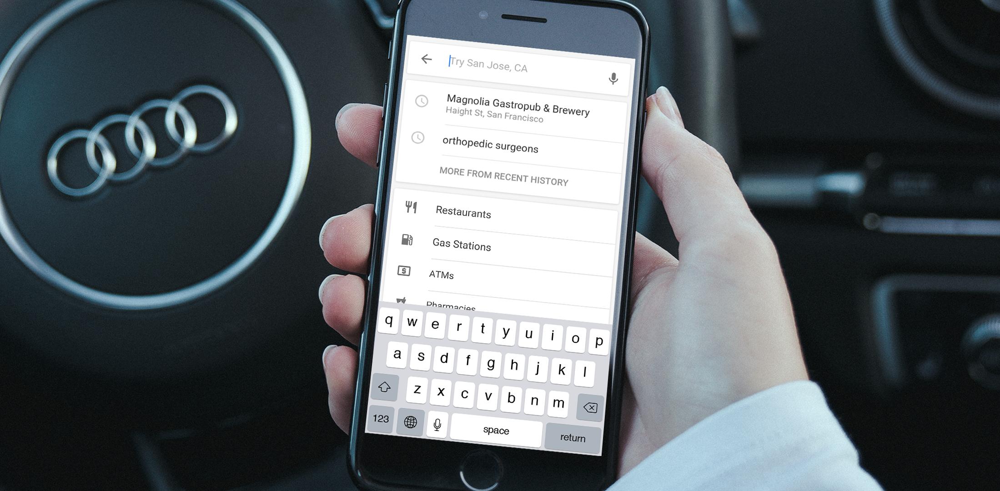

sr. product designer living in the bay area
For most of my career, I've had the chance to work on some impactful projects with some talented folks including along the way.
My work has been featured on the AIGA, the Tonight Show with Jimmy Fallon and The Today’s Show.
Take a look at some case studies and work below, and feel free to hit me up should you want to grab some coffee.
Google
sapient
linkedin
zippo
ueno
canon
goang
Google
sapient
linkedin
zippo
ueno
canon
goang
visual, ux &
interaction designer
trying to
understand, explore & validate radical ideas
This is generally how I approach my work, even though not every project has the time or resources for it - it's baked into my mentality and process.
I grew up in Washington DC and moved to the Bay nearly a decade ago to take a chance at running a business and embarking on new challenges.
From strategy and illustration to prototyping and motion design, I find myself interested in and continuously exploring these mediums.
humanize technology

From social apps within an earlier facebook ecosystem, to features and frameworks across Google Maps. I've led workshops, seminars and fireside chats - always finding time to mentor and teach others about a fast moving industry and different ways to design for different folks around the world.
I'm a big advocate for using motion and interactivity to convey a point, story or message, and using research to validate these ideas - both with product and system level considerations, and creating tight knit product and engineering relationships along the way.
through thoughtful & scalable design
2018
modernizing nav search on google
modernizing navigational search on google. it was time local search caught up to search's new design language. the goal was to take research and validated system parts such as navigation, imagery and actions, and stress test them against local needs -- including dining, salons and hotel use cases.
the featured patterns and interactions you see below are areas i led and contributed in defining and building out. we also worked closely with the driving and navigation teams and leveraged search's system design team to keep things consistent.
using search's newly validated visual design system to re-visualize local search through cross-functional collaboration
a framework supporting 350m places across Google
my role was to work with the various local search teams between sf, nyc, zrh, tok and syd and marry visual explorations with interaction design.
this also meant aligning on search's interaction patterns, alongside our own, primarily through extensive and rapid prototyping and visual design. this was in combination with other efforts already in progress, such as imagery and nav traversal.
this effort intended to set the stage for modernizing three types of local search -- categorical, chains and navigational search (essentially place listings across maps and search).
we started with our own and existing projects, reshaped their roadmaps, aligned with various local teams, eg shopping, transactions, imagery and ugc. chains and categorical search were already so embedded into core search's framework, it was getting attention already, but nav needed some serious work.
i worked on traversal, tabs, actions and imagery, more specifically. i paired with other designers from search, visual design and local to explore and validate several directions across ios, android, mobile web and desktop cases. this was a brigade effort between many, and the patterns you use today are a culmination of researchers and designers together.
i helped explore and develop the transitions and persistent scroll patterns between post nav and immersive views.
2016-2018
live & wait times on google
People need help planning their days.
Hopefully you're familiar with Live Popular Times on Google Maps and Search. This was the next installment of that. Working closing with a motion designer and writer, I defined the UI and patterns you see below. The goal was to explore and integrate estimated wait times between local listings on Google Search and Maps.
we built a scalable & interactive framework able to support multiple verticals — estimated waits, as well as live & historical crowd volume together

We ultimately decided to evolve our Popular Times feature into a more interactive and robust product serving a series of visit data: Popular Times, Live Popular Times and estimated wait times.
This was a min-viable attempt to create a safe and simple yet scalable framework to handle more wait time data as Google's machine learning improved and local listing info becomes increasingly available through the various signals gathered over time.I worked on the overall UI and interaction model. I worked with writing, research and motion design to explore and stress test against all of the wait time cases and across our local verticals.
We moved towards an interactive graph hoping users could get more value from. We saw folks trying to touch the graph but getting nothing in return, so we allowed for up to the hour interactivity.
This also allowed for up to the hour wait times to co-exist along side live and average crowd volume. We also had to keep live data in mind. We kept most of the original popular times graph and moved the static badge into a flexible tool tip directly attached to the graph itself. If wait data was available, it showed up below the standard times snippet.
a multi-vertical & localized-friendly framework
This was a min-viable attempt to create a safe and simple yet scalable framework to handle more wait time data as Google's machine learning improved and local listing info becomes increasingly available through the various signals gathered over time.
The sensitivity of this info was also to be considered, as well as how it played a role in decision making between parsing how busy a place was at that very time vs another day of the week.
After rounds of research, we learned more and accounted for worst case wait times and extracted that key data point and placed it into the core UI for each day
2015
Zero suggest on Google Maps
Years ago, google maps supported top categorical shortcuts, but they were hidden beneath the keypad and the list was only so forgiving. folks inside and outside of the united states wanted quicker access to these needs, not only while on foot, but during driving as well.
Existing categorical shortcuts weren't easy to see, easy to touch or easy to remember where they were in the list. on top of that, google returns different results using different names, eg atms vs atm will yield different places, sometimes not the most optimal for your needs. We took a look at some competitor models (apple maps, city mapper) that tackled similar localization cases as well as both types of navigation, as well as at a similar point of friction google maps faced vs others.
we designed a scalable & flexible framework aimed at reducing query friction between top local searches

resulting in a suggest pattern for everyone
Ultimately, these little circles were to scale out into a larger suggest framework throughout Maps and parts of Search, and continue with iterations over the next several quarters.
At the end of the day, it was most important for us to cut down query task time and get users results safely and quicker than before, in both driving and walking scenarios.
Red iconography aligned to base map points of interest and didn't force us down a new coloring path for the short term goals we wanted to it.